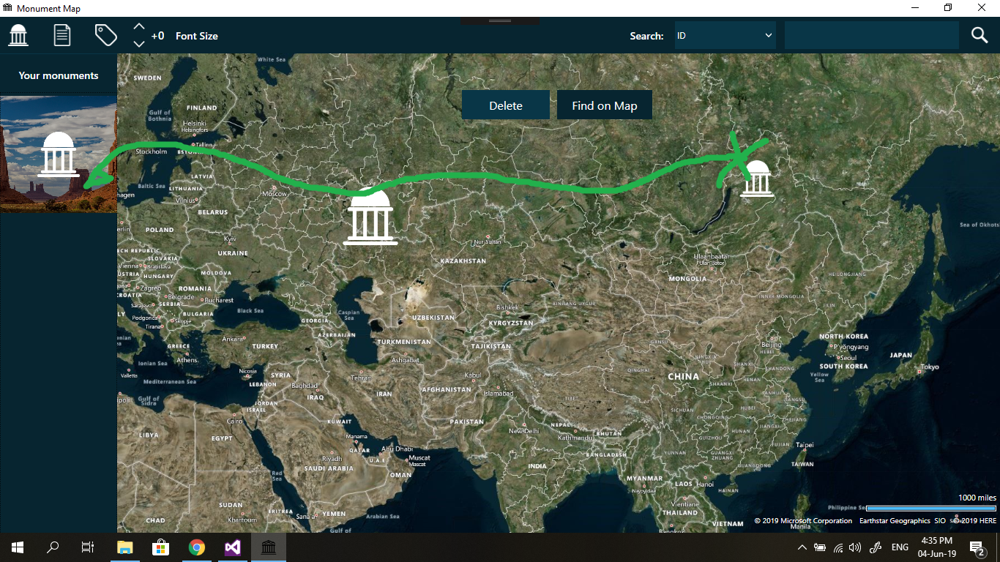

This couldn't be easier. All you have to do is click on one of the monuments that you have added, the ones located in the "My monuments section" drag it to a certain location on the map and place it there. Don't worry if you have missed a spot, you can always redrag the monument to change it's location. Just make sure you do not drop it one the delete button if you do not want to delete it.
